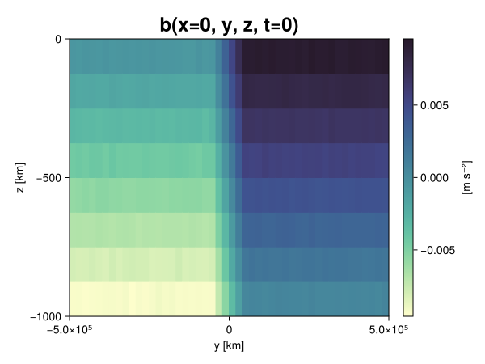
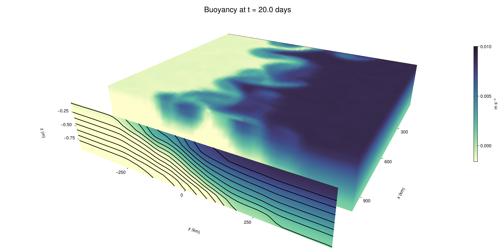

Baroclinic adjustment
In this example, we simulate the evolution and equilibration of a baroclinically unstable front.
Install dependencies
First let's make sure we have all required packages installed.
using Pkg
pkg"add Oceananigans, CairoMakie"using Oceananigans
using Oceananigans.UnitsGrid
We use a three-dimensional channel that is periodic in the x direction:
Lx = 1000kilometers # east-west extent [m]
Ly = 1000kilometers # north-south extent [m]
Lz = 1kilometers # depth [m]
grid = RectilinearGrid(size = (48, 48, 8),
x = (0, Lx),
y = (-Ly/2, Ly/2),
z = (-Lz, 0),
topology = (Periodic, Bounded, Bounded))48×48×8 RectilinearGrid{Float64, Periodic, Bounded, Bounded} on CPU with 3×3×3 halo
├── Periodic x ∈ [0.0, 1.0e6) regularly spaced with Δx=20833.3
├── Bounded y ∈ [-500000.0, 500000.0] regularly spaced with Δy=20833.3
└── Bounded z ∈ [-1000.0, 0.0] regularly spaced with Δz=125.0Model
We built a HydrostaticFreeSurfaceModel with an ImplicitFreeSurface solver. Regarding Coriolis, we use a beta-plane centered at 45° South.
model = HydrostaticFreeSurfaceModel(; grid,
coriolis = BetaPlane(latitude = -45),
buoyancy = BuoyancyTracer(),
tracers = :b,
momentum_advection = WENO(),
tracer_advection = WENO())HydrostaticFreeSurfaceModel{CPU, RectilinearGrid}(time = 0 seconds, iteration = 0)
├── grid: 48×48×8 RectilinearGrid{Float64, Periodic, Bounded, Bounded} on CPU with 3×3×3 halo
├── timestepper: QuasiAdamsBashforth2TimeStepper
├── tracers: b
├── closure: Nothing
├── buoyancy: BuoyancyTracer with ĝ = NegativeZDirection()
├── free surface: ImplicitFreeSurface with gravitational acceleration 9.80665 m s⁻²
│ └── solver: FFTImplicitFreeSurfaceSolver
├── advection scheme:
│ ├── momentum: WENO reconstruction order 5
│ └── b: WENO reconstruction order 5
└── coriolis: BetaPlane{Float64}We start our simulation from rest with a baroclinically unstable buoyancy distribution. We use ramp(y, Δy), defined below, to specify a front with width Δy and horizontal buoyancy gradient M². We impose the front on top of a vertical buoyancy gradient N² and a bit of noise.
"""
ramp(y, Δy)
Linear ramp from 0 to 1 between -Δy/2 and +Δy/2.
For example:
```
y < -Δy/2 => ramp = 0
-Δy/2 < y < -Δy/2 => ramp = y / Δy
y > Δy/2 => ramp = 1
```
"""
ramp(y, Δy) = min(max(0, y/Δy + 1/2), 1)
N² = 1e-5 # [s⁻²] buoyancy frequency / stratification
M² = 1e-7 # [s⁻²] horizontal buoyancy gradient
Δy = 100kilometers # width of the region of the front
Δb = Δy * M² # buoyancy jump associated with the front
ϵb = 1e-2 * Δb # noise amplitude
bᵢ(x, y, z) = N² * z + Δb * ramp(y, Δy) + ϵb * randn()
set!(model, b=bᵢ)Let's visualize the initial buoyancy distribution.
using CairoMakie
# Build coordinates with units of kilometers
x, y, z = 1e-3 .* nodes(grid, (Center(), Center(), Center()))
b = model.tracers.b
fig, ax, hm = heatmap(view(b, 1, :, :),
colormap = :deep,
axis = (xlabel = "y [km]",
ylabel = "z [km]",
title = "b(x=0, y, z, t=0)",
titlesize = 24))
Colorbar(fig[1, 2], hm, label = "[m s⁻²]")
fig
Simulation
Now let's build a Simulation.
simulation = Simulation(model, Δt=20minutes, stop_time=20days)Simulation of HydrostaticFreeSurfaceModel{CPU, RectilinearGrid}(time = 0 seconds, iteration = 0)
├── Next time step: 20 minutes
├── Elapsed wall time: 0 seconds
├── Wall time per iteration: NaN days
├── Stop time: 20 days
├── Stop iteration : Inf
├── Wall time limit: Inf
├── Callbacks: OrderedDict with 4 entries:
│ ├── stop_time_exceeded => Callback of stop_time_exceeded on IterationInterval(1)
│ ├── stop_iteration_exceeded => Callback of stop_iteration_exceeded on IterationInterval(1)
│ ├── wall_time_limit_exceeded => Callback of wall_time_limit_exceeded on IterationInterval(1)
│ └── nan_checker => Callback of NaNChecker for u on IterationInterval(100)
├── Output writers: OrderedDict with no entries
└── Diagnostics: OrderedDict with no entriesWe add a TimeStepWizard callback to adapt the simulation's time-step,
conjure_time_step_wizard!(simulation, IterationInterval(20), cfl=0.2, max_Δt=20minutes)Also, we add a callback to print a message about how the simulation is going,
using Printf
wall_clock = Ref(time_ns())
function print_progress(sim)
u, v, w = model.velocities
progress = 100 * (time(sim) / sim.stop_time)
elapsed = (time_ns() - wall_clock[]) / 1e9
@printf("[%05.2f%%] i: %d, t: %s, wall time: %s, max(u): (%6.3e, %6.3e, %6.3e) m/s, next Δt: %s\n",
progress, iteration(sim), prettytime(sim), prettytime(elapsed),
maximum(abs, u), maximum(abs, v), maximum(abs, w), prettytime(sim.Δt))
wall_clock[] = time_ns()
return nothing
end
add_callback!(simulation, print_progress, IterationInterval(100))Diagnostics/Output
Here, we save the buoyancy, $b$, at the edges of our domain as well as the zonal ($x$) average of buoyancy.
u, v, w = model.velocities
ζ = ∂x(v) - ∂y(u)
B = Average(b, dims=1)
U = Average(u, dims=1)
V = Average(v, dims=1)
filename = "baroclinic_adjustment"
save_fields_interval = 0.5day
slicers = (east = (grid.Nx, :, :),
north = (:, grid.Ny, :),
bottom = (:, :, 1),
top = (:, :, grid.Nz))
for side in keys(slicers)
indices = slicers[side]
simulation.output_writers[side] = JLD2OutputWriter(model, (; b, ζ);
filename = filename * "_$(side)_slice",
schedule = TimeInterval(save_fields_interval),
overwrite_existing = true,
indices)
end
simulation.output_writers[:zonal] = JLD2OutputWriter(model, (; b=B, u=U, v=V);
filename = filename * "_zonal_average",
schedule = TimeInterval(save_fields_interval),
overwrite_existing = true)JLD2OutputWriter scheduled on TimeInterval(12 hours):
├── filepath: ./baroclinic_adjustment_zonal_average.jld2
├── 3 outputs: (b, u, v)
├── array type: Array{Float64}
├── including: [:grid, :coriolis, :buoyancy, :closure]
├── file_splitting: NoFileSplitting
└── file size: 30.7 KiBNow we're ready to run.
@info "Running the simulation..."
run!(simulation)
@info "Simulation completed in " * prettytime(simulation.run_wall_time)[ Info: Running the simulation...
[ Info: Initializing simulation...
[00.00%] i: 0, t: 0 seconds, wall time: 22.120 seconds, max(u): (0.000e+00, 0.000e+00, 0.000e+00) m/s, next Δt: 20 minutes
[ Info: ... simulation initialization complete (23.212 seconds)
[ Info: Executing initial time step...
[ Info: ... initial time step complete (22.091 seconds).
[06.94%] i: 100, t: 1.389 days, wall time: 36.329 seconds, max(u): (1.243e-01, 1.217e-01, 1.566e-03) m/s, next Δt: 20 minutes
[13.89%] i: 200, t: 2.778 days, wall time: 965.225 ms, max(u): (2.158e-01, 1.824e-01, 1.809e-03) m/s, next Δt: 20 minutes
[20.83%] i: 300, t: 4.167 days, wall time: 961.685 ms, max(u): (2.935e-01, 2.738e-01, 1.847e-03) m/s, next Δt: 20 minutes
[27.78%] i: 400, t: 5.556 days, wall time: 893.688 ms, max(u): (3.589e-01, 3.411e-01, 1.961e-03) m/s, next Δt: 20 minutes
[34.72%] i: 500, t: 6.944 days, wall time: 1.164 seconds, max(u): (4.653e-01, 5.055e-01, 2.049e-03) m/s, next Δt: 20 minutes
[41.67%] i: 600, t: 8.333 days, wall time: 946.595 ms, max(u): (5.371e-01, 7.606e-01, 2.530e-03) m/s, next Δt: 20 minutes
[48.61%] i: 700, t: 9.722 days, wall time: 922.960 ms, max(u): (8.670e-01, 1.159e+00, 3.153e-03) m/s, next Δt: 20 minutes
[55.56%] i: 800, t: 11.111 days, wall time: 859.493 ms, max(u): (1.319e+00, 1.275e+00, 4.100e-03) m/s, next Δt: 20 minutes
[62.50%] i: 900, t: 12.500 days, wall time: 812.278 ms, max(u): (1.434e+00, 1.332e+00, 4.331e-03) m/s, next Δt: 20 minutes
[69.44%] i: 1000, t: 13.889 days, wall time: 931.637 ms, max(u): (1.423e+00, 1.502e+00, 4.730e-03) m/s, next Δt: 20 minutes
[76.39%] i: 1100, t: 15.278 days, wall time: 875.172 ms, max(u): (1.473e+00, 1.466e+00, 4.195e-03) m/s, next Δt: 20 minutes
[83.33%] i: 1200, t: 16.667 days, wall time: 973.389 ms, max(u): (1.546e+00, 1.143e+00, 3.433e-03) m/s, next Δt: 20 minutes
[90.28%] i: 1300, t: 18.056 days, wall time: 1.067 seconds, max(u): (1.512e+00, 1.207e+00, 3.404e-03) m/s, next Δt: 20 minutes
[97.22%] i: 1400, t: 19.444 days, wall time: 928.503 ms, max(u): (1.545e+00, 1.270e+00, 3.396e-03) m/s, next Δt: 20 minutes
[ Info: Simulation is stopping after running for 1.034 minutes.
[ Info: Simulation time 20 days equals or exceeds stop time 20 days.
[ Info: Simulation completed in 1.035 minutes
Visualization
All that's left is to make a pretty movie. Actually, we make two visualizations here. First, we illustrate how to make a 3D visualization with Makie's Axis3 and Makie.surface. Then we make a movie in 2D. We use CairoMakie in this example, but note that using GLMakie is more convenient on a system with OpenGL, as figures will be displayed on the screen.
using CairoMakieThree-dimensional visualization
We load the saved buoyancy output on the top, north, and east surface as FieldTimeSerieses.
filename = "baroclinic_adjustment"
sides = keys(slicers)
slice_filenames = NamedTuple(side => filename * "_$(side)_slice.jld2" for side in sides)
b_timeserieses = (east = FieldTimeSeries(slice_filenames.east, "b"),
north = FieldTimeSeries(slice_filenames.north, "b"),
top = FieldTimeSeries(slice_filenames.top, "b"))
B_timeseries = FieldTimeSeries(filename * "_zonal_average.jld2", "b")
times = B_timeseries.times
grid = B_timeseries.grid48×48×8 RectilinearGrid{Float64, Periodic, Bounded, Bounded} on CPU with 3×3×3 halo
├── Periodic x ∈ [0.0, 1.0e6) regularly spaced with Δx=20833.3
├── Bounded y ∈ [-500000.0, 500000.0] regularly spaced with Δy=20833.3
└── Bounded z ∈ [-1000.0, 0.0] regularly spaced with Δz=125.0We build the coordinates. We rescale horizontal coordinates to kilometers.
xb, yb, zb = nodes(b_timeserieses.east)
xb = xb ./ 1e3 # convert m -> km
yb = yb ./ 1e3 # convert m -> km
Nx, Ny, Nz = size(grid)
x_xz = repeat(x, 1, Nz)
y_xz_north = y[end] * ones(Nx, Nz)
z_xz = repeat(reshape(z, 1, Nz), Nx, 1)
x_yz_east = x[end] * ones(Ny, Nz)
y_yz = repeat(y, 1, Nz)
z_yz = repeat(reshape(z, 1, Nz), grid.Ny, 1)
x_xy = x
y_xy = y
z_xy_top = z[end] * ones(grid.Nx, grid.Ny)Then we create a 3D axis. We use zonal_slice_displacement to control where the plot of the instantaneous zonal average flow is located.
fig = Figure(size = (1600, 800))
zonal_slice_displacement = 1.2
ax = Axis3(fig[2, 1],
aspect=(1, 1, 1/5),
xlabel = "x (km)",
ylabel = "y (km)",
zlabel = "z (m)",
xlabeloffset = 100,
ylabeloffset = 100,
zlabeloffset = 100,
limits = ((x[1], zonal_slice_displacement * x[end]), (y[1], y[end]), (z[1], z[end])),
elevation = 0.45,
azimuth = 6.8,
xspinesvisible = false,
zgridvisible = false,
protrusions = 40,
perspectiveness = 0.7)Axis3()We use data from the final savepoint for the 3D plot. Note that this plot can easily be animated by using Makie's Observable. To dive into Observables, check out Makie.jl's Documentation.
n = length(times)41Now let's make a 3D plot of the buoyancy and in front of it we'll use the zonally-averaged output to plot the instantaneous zonal-average of the buoyancy.
b_slices = (east = interior(b_timeserieses.east[n], 1, :, :),
north = interior(b_timeserieses.north[n], :, 1, :),
top = interior(b_timeserieses.top[n], :, :, 1))
# Zonally-averaged buoyancy
B = interior(B_timeseries[n], 1, :, :)
clims = 1.1 .* extrema(b_timeserieses.top[n][:])
kwargs = (colorrange=clims, colormap=:deep, shading=NoShading)
surface!(ax, x_yz_east, y_yz, z_yz; color = b_slices.east, kwargs...)
surface!(ax, x_xz, y_xz_north, z_xz; color = b_slices.north, kwargs...)
surface!(ax, x_xy, y_xy, z_xy_top; color = b_slices.top, kwargs...)
sf = surface!(ax, zonal_slice_displacement .* x_yz_east, y_yz, z_yz; color = B, kwargs...)
contour!(ax, y, z, B; transformation = (:yz, zonal_slice_displacement * x[end]),
levels = 15, linewidth = 2, color = :black)
Colorbar(fig[2, 2], sf, label = "m s⁻²", height = Relative(0.4), tellheight=false)
title = "Buoyancy at t = " * string(round(times[n] / day, digits=1)) * " days"
fig[1, 1:2] = Label(fig, title; fontsize = 24, tellwidth = false, padding = (0, 0, -120, 0))
rowgap!(fig.layout, 1, Relative(-0.2))
colgap!(fig.layout, 1, Relative(-0.1))
save("baroclinic_adjustment_3d.png", fig)
Two-dimensional movie
We make a 2D movie that shows buoyancy $b$ and vertical vorticity $ζ$ at the surface, as well as the zonally-averaged zonal and meridional velocities $U$ and $V$ in the $(y, z)$ plane. First we load the FieldTimeSeries and extract the additional coordinates we'll need for plotting
ζ_timeseries = FieldTimeSeries(slice_filenames.top, "ζ")
U_timeseries = FieldTimeSeries(filename * "_zonal_average.jld2", "u")
B_timeseries = FieldTimeSeries(filename * "_zonal_average.jld2", "b")
V_timeseries = FieldTimeSeries(filename * "_zonal_average.jld2", "v")
xζ, yζ, zζ = nodes(ζ_timeseries)
yv = ynodes(V_timeseries)
xζ = xζ ./ 1e3 # convert m -> km
yζ = yζ ./ 1e3 # convert m -> km
yv = yv ./ 1e3 # convert m -> km49-element Vector{Float64}:
-500.0
-479.1666666666667
-458.3333333333333
-437.5
-416.6666666666667
-395.8333333333333
-375.0
-354.1666666666667
-333.3333333333333
-312.5
-291.6666666666667
-270.8333333333333
-250.0
-229.16666666666666
-208.33333333333334
-187.5
-166.66666666666666
-145.83333333333334
-125.0
-104.16666666666667
-83.33333333333333
-62.5
-41.666666666666664
-20.833333333333332
0.0
20.833333333333332
41.666666666666664
62.5
83.33333333333333
104.16666666666667
125.0
145.83333333333334
166.66666666666666
187.5
208.33333333333334
229.16666666666666
250.0
270.8333333333333
291.6666666666667
312.5
333.3333333333333
354.1666666666667
375.0
395.8333333333333
416.6666666666667
437.5
458.3333333333333
479.1666666666667
500.0Next, we set up a plot with 4 panels. The top panels are large and square, while the bottom panels get a reduced aspect ratio through rowsize!.
set_theme!(Theme(fontsize=24))
fig = Figure(size=(1800, 1000))
axb = Axis(fig[1, 2], xlabel="x (km)", ylabel="y (km)", aspect=1)
axζ = Axis(fig[1, 3], xlabel="x (km)", ylabel="y (km)", aspect=1, yaxisposition=:right)
axu = Axis(fig[2, 2], xlabel="y (km)", ylabel="z (m)")
axv = Axis(fig[2, 3], xlabel="y (km)", ylabel="z (m)", yaxisposition=:right)
rowsize!(fig.layout, 2, Relative(0.3))To prepare a plot for animation, we index the timeseries with an Observable,
n = Observable(1)
b_top = @lift interior(b_timeserieses.top[$n], :, :, 1)
ζ_top = @lift interior(ζ_timeseries[$n], :, :, 1)
U = @lift interior(U_timeseries[$n], 1, :, :)
V = @lift interior(V_timeseries[$n], 1, :, :)
B = @lift interior(B_timeseries[$n], 1, :, :)Observable([-0.009381848962059096 -0.00811381084905699 -0.0068750480638612955 -0.0056216079518712535 -0.004374080052857314 -0.0031246195695554175 -0.0019096127311900087 -0.0006154572796471112; -0.009389483350132136 -0.008144456851904083 -0.006883513134325427 -0.005626898513357157 -0.004339866431449602 -0.0031435400523732253 -0.0018695154526635908 -0.0006087402427078879; -0.009367429187486507 -0.008145533228989248 -0.006884380154676154 -0.005617523813628088 -0.0043690734248811765 -0.0031283876316584706 -0.0018560535487853718 -0.0006275771581628053; -0.00937706810381652 -0.008140299340731285 -0.00687259505120983 -0.005640404711502515 -0.004360883608306988 -0.003139344584881964 -0.001899325070811241 -0.0006284538980888165; -0.00935923554954362 -0.008089982894676604 -0.006855860463088485 -0.005630036777901371 -0.0043735337495798025 -0.0031388669024226905 -0.0018805922223622798 -0.0006356115234185281; -0.009374984712370091 -0.008113041630761488 -0.006880939730823652 -0.0056423458980861445 -0.004369928118669954 -0.0031513108045748708 -0.0018843676079746095 -0.0006266659957619387; -0.009368757547107615 -0.008093711272595618 -0.0068584524979953855 -0.005615073841833104 -0.004359574591929943 -0.0031228569620981657 -0.0018831124575198865 -0.0006254086527065316; -0.009345994486705148 -0.008137989043048964 -0.006866626529236859 -0.005605390088533055 -0.004402116737410454 -0.003119481646522334 -0.0018821369256262835 -0.000619870398718934; -0.009370224526229163 -0.008120740484408343 -0.006869242200409389 -0.00562102027684892 -0.004393558233976164 -0.003144155236672235 -0.0018638261205717055 -0.0006362022974113365; -0.009385248562477246 -0.008103929542835321 -0.006885184682935179 -0.005626713013480357 -0.004365880620606393 -0.003091638161557052 -0.0018785561530445577 -0.0006194900489476865; -0.009388647886259366 -0.008139998478928068 -0.006871059566902492 -0.00565457997012302 -0.004377193798897693 -0.003118906429873678 -0.0018593109670475023 -0.000624654002419841; -0.009386454325728743 -0.008106950054305983 -0.006869673527337371 -0.005595787283286923 -0.004377429264023262 -0.0031018089724877025 -0.001881351747626445 -0.0006148492068155661; -0.009373283994587115 -0.00812258007581053 -0.006883860924250057 -0.005608702425257951 -0.004377609780457912 -0.0031010947104295884 -0.0018567953636672142 -0.000634203650584311; -0.009360220344863921 -0.008142475469106271 -0.006902751206281224 -0.005638334406946222 -0.0043400994053845255 -0.0031316687701400787 -0.0018936198274103163 -0.0006402484487998295; -0.009394965235249795 -0.0081263501482994 -0.0068725659381411175 -0.005610209032722476 -0.004378528979213322 -0.0031185329470314895 -0.0018781503491957542 -0.000635392433018726; -0.009371505759018295 -0.008135068190952681 -0.006879135649848472 -0.005618848441259355 -0.004355343927975472 -0.00311843810080484 -0.0018579324275665888 -0.0006356021626931162; -0.00938279582107717 -0.00809096013812216 -0.0068823098249115615 -0.005628127358562722 -0.004360752531231978 -0.0031509224815973185 -0.0018785422144079768 -0.0006262655904641024; -0.009367769770309222 -0.008118363127415288 -0.006880410724060468 -0.005639789913860992 -0.004364904604262493 -0.0031286055328726713 -0.0018538554591776748 -0.000621903741975031; -0.009376125738949335 -0.008113290711297733 -0.006861727389095567 -0.005605065476661927 -0.004354121066142593 -0.0031274167537796767 -0.0018491713736514608 -0.0006030701870605717; -0.009367624412371302 -0.008129351958232564 -0.006879670909806987 -0.005628766145199843 -0.004389491733724632 -0.003116725190398314 -0.0018526933964941779 -0.0006411597522446398; -0.009377561804392582 -0.008140266157174463 -0.006870015094734128 -0.0056291137550499755 -0.004354233555456263 -0.003134910256591187 -0.001864197517935121 -0.0006213415367631172; -0.009372233746436849 -0.008132436224740892 -0.006880210049013503 -0.005637407446902001 -0.00436848508230881 -0.0031076597721414827 -0.001901831532108776 -0.0006114192557753138; -0.0075038958303712865 -0.006262651650713993 -0.004995495561610999 -0.0037507492281106166 -0.002493885897025146 -0.0012288802560276467 1.622775699235243e-5 0.001258019653547539; -0.005408341851218163 -0.004163820651755264 -0.002908598381287805 -0.0016257653127532239 -0.000419642098659154 0.000850181239424438 0.002102538564791183 0.003339660858097171; -0.00334567908281519 -0.0020754976169474484 -0.000854751422638503 0.00043274202901311766 0.0016570455543467929 0.002915801285967848 0.0041588705001168475 0.005407328985844797; -0.0012689734926946534 9.753319681340066e-6 0.0012761751384331055 0.002497661551605377 0.003742489920931038 0.004979676917937285 0.00626206960557861 0.007480531667729392; 0.000634110315439596 0.0018669883174343297 0.0031116236876590586 0.004380446634720931 0.005633259450520058 0.006886510977658442 0.008127269626454754 0.009378397534862873; 0.0006288755283110709 0.0018682271243747285 0.0031128590781826066 0.004391598219403666 0.005614794225142328 0.006866847799072598 0.008143743492968229 0.009351893724156289; 0.0006212610032846637 0.0018650007264869215 0.003114794192846708 0.004356155778918298 0.005618430422800437 0.006876692137642113 0.008134048598443997 0.009392466808136752; 0.000609592591945863 0.0019014318055859143 0.0031271655317483965 0.004360774070529824 0.005630512705859812 0.006893410649844907 0.008131880739902703 0.009368788738741361; 0.0006430449975933667 0.001859442918567838 0.0031280724922966943 0.004395327236829769 0.005617127988098149 0.006874091962049438 0.008131579173450443 0.00938700233992218; 0.00061891843902432 0.0018810274956832078 0.003138191640807242 0.0043841574496844265 0.005618395748411359 0.006892279425175704 0.008144655166097555 0.009398760505447268; 0.0006467635220455466 0.001891872373323003 0.003116650108133117 0.004394690794644131 0.0056041960771868 0.006886653722863237 0.00813193289934105 0.009403805094300121; 0.0006514016591588957 0.001841091206523195 0.003134400354972599 0.004380104183075612 0.0056194208766934305 0.006876934359114372 0.008151357396795277 0.009359094344620275; 0.000636300934246447 0.001887233470412002 0.00311758052408263 0.004337521824802545 0.0056405640196422815 0.006862234563463532 0.008108978261094808 0.009369646025542909; 0.0006509165433945676 0.0019023214660766681 0.0031204674860250653 0.004412695620951782 0.005616879931864621 0.006876694782125602 0.008124077949078337 0.009380838169249355; 0.0006229609016465695 0.0018939647764045682 0.0031204540949272912 0.004391172041935869 0.0056287738029578505 0.006894583654446014 0.00812480073094503 0.009378667936322761; 0.0006267080717783053 0.001887270456979363 0.003140010578811008 0.004355065218588177 0.005648086714433137 0.006894952910835635 0.00813523051980155 0.009384522538900266; 0.0006112252657184016 0.0018565847404166168 0.0031315141557500506 0.0043842191122302815 0.005631587542219367 0.006857069935224397 0.008159469424755013 0.009392853214991628; 0.0006168031571161195 0.0019065681998873256 0.003129663031047553 0.0043758503034445305 0.005651367237343499 0.006890098878395197 0.008103615928202636 0.009386944970592793; 0.0006390910124082333 0.0018618625644632528 0.0030935400378883037 0.004387315276592044 0.005612396835416877 0.006852735882151438 0.00814571589326001 0.009398401890860482; 0.0006183647844185689 0.0018849741555329064 0.0031349349788644294 0.004366356013305908 0.005643816215550272 0.006883855374437038 0.008104499107243009 0.009361786288040684; 0.0006411662293065881 0.0018361646569686706 0.003105634809096841 0.004360283050017728 0.005634004727684365 0.006870817573938047 0.008108492027391473 0.009371571834470231; 0.0006136180766780274 0.0019063442995088111 0.0031291872485018257 0.004401113268154697 0.00563367820084346 0.0068586814575149245 0.008135644576567331 0.009357271711586177; 0.0006365405514989686 0.0018731480535621673 0.003115378073586035 0.0043666526046579265 0.00564929368809291 0.006883101807749464 0.00812232050877057 0.009368543197570951; 0.0006228613235019716 0.0018415153370722488 0.003122019639447552 0.004354174547072009 0.005608445508842547 0.006867925146684378 0.008145572982810559 0.009355324653125474; 0.0005935501737145497 0.0018634217229962086 0.0031180990673729523 0.004374629087215086 0.0056388080479755145 0.006882111456353677 0.008134655653578663 0.009390591032784034; 0.0006361219070508774 0.0018577433225801041 0.00310743127738645 0.004400942824761405 0.005606177715619162 0.00688027734038502 0.0081264067446789 0.009414948714979212])
and then build our plot:
hm = heatmap!(axb, xb, yb, b_top, colorrange=(0, Δb), colormap=:thermal)
Colorbar(fig[1, 1], hm, flipaxis=false, label="Surface b(x, y) (m s⁻²)")
hm = heatmap!(axζ, xζ, yζ, ζ_top, colorrange=(-5e-5, 5e-5), colormap=:balance)
Colorbar(fig[1, 4], hm, label="Surface ζ(x, y) (s⁻¹)")
hm = heatmap!(axu, yb, zb, U; colorrange=(-5e-1, 5e-1), colormap=:balance)
Colorbar(fig[2, 1], hm, flipaxis=false, label="Zonally-averaged U(y, z) (m s⁻¹)")
contour!(axu, yb, zb, B; levels=15, color=:black)
hm = heatmap!(axv, yv, zb, V; colorrange=(-1e-1, 1e-1), colormap=:balance)
Colorbar(fig[2, 4], hm, label="Zonally-averaged V(y, z) (m s⁻¹)")
contour!(axv, yb, zb, B; levels=15, color=:black)Finally, we're ready to record the movie.
frames = 1:length(times)
record(fig, filename * ".mp4", frames, framerate=8) do i
n[] = i
endThis page was generated using Literate.jl.